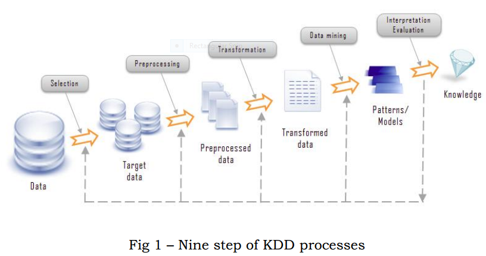

At the field of computer science, programming is more important than other area such networking, database and others. Technologies breakthrough always happen in business area and others is due to software technologies. For examples, combine progIn these days, the amount of collecting data has being rapidly grown in the wide verities of area. The number is increasing unimaginably in every single second around the world. The wealthy of data is not always give the profit when they are not useful or they can not be used effectively. It is also called information overloading. Therefore, there is a rapid requirement for the development of algorithms, theories, tools and techniques for helping researcher, decision maker, analyst and others to retrieve valuable information or high level knowledge that is ready to use from collected raw data. In addition, these must be rely on computational power. Because the price computing devices is much noticeably lower and it performance is higher than last few decades. All these lead to the development of knowledge discovery in databases (KDD).
Before the development of KDD, we relied on analysis skill of human resources to retrieve knowledge from data. The company, institution and organization make decision for the development of their association by looking at the report that is produced regularly by the analyst. For instance, health care industry used these report to manage their system and make effective decision while choosing marketing plan and strategies.
In most area, the degree of collecting data (record) in a period is noticeably higher than the others. In addition, they also collect newly found area of information (field). For instance, the billions of new records might be collected in every day in the field of astrology and the number of fields are usually thousand in medical area. Additionally, the number of new member of social networking site (like Facebook, Instagram) are growing and existing member are updating the new information into the Internet. There is no doubt that majority of data analyst can handle to those kind of data even 6 though they are working as professional without taking the help of advanced technology like KDD.
People have given varieties name to the process of finding useful patterns or knowledge from large amount of data. These are called data mining, information discovery, information harvesting, knowledge extraction, data pattern processing and data archaeology. The terms of data mining is used among people who are working in the field of statistic, data science, information system management and databases. It also got interested in the area of machine learning and AI (artificial intelligence). The expression of KDD was introduced at the vary first KDD workshop at August 20th in Detroit in the United Sates.
Generally, most people think KDD and data mining are the same. Actually, it is not definitely true. KDD is the processes of discovering knowledge in data when data-mining is one of the part of these processes. There are also many steps in data mining as KDD has. Additionally, data mining uses algorithms to retrieve patterns from data and can be called as the tool that is used for KDD.
KDD has been developing a long with other area such as artificial intelligence, machine learning, statistics, databases, data visualization, pattern recognition and others whose goal is retrieving knowledge from data. It also have relationship with another database related area called data warehousing. It is popular in business area due to the fact that it can provide clean data from transition for decision making and on-line analysis. OLAP (on-line analytical processing) is popular for analyzing the data warehouse. It is used to assist the data analysis while data-mining or tool of KDD goals is to make the processes as automated as possible.
KDD processes are repetitive and rely to each others. There are nine steps or stages involve in this processing model.
The first step is called learning the application domain. We tried to understand the domain of application, related knowledge and identify the aim of the process from user point of view.
The second step is called create a target data set. This is the step of selecting data that relevant to target application.
The third step is called data cleaning and pre-processing. This is the step of removing noise or data that is not useful while processing, selecting the way of solving the missing value and thinking of time sequence information.
The fourth step is called data reduction and transformation. In this step, the data is transformed into appropriate for mining and finding the suitable way of representing data according to goal of application.
The fifth step is called choosing functions of data mining. This is the step of selecting functions that is suitable to use with the applications. There are many functions available to 8 choose. They are as follow classification, regression, clustering, and association and so on.
The six step is called choosing the data mining algorithms. This is the step of selecting data mining algorithm and methods used for finding patterns from data. There are more than one algorithm for a data mining function.
The seventh step is called data mining. This is the actual step of performing mining function by using selected algorithms from the previous step to find the pattern of interested from collected or selected data.
The eight step is called pattern evaluation and knowledge presentation. This is the step of translating the discovered patterns into form (such as diagrams and figures) that can be easily understandable by the customer.
The ninth step is called use of discovered knowledge. This is the last step, ready to use in the working environment of customer. The product is given to customer a long with documentation.
These are the nine different process of discovering knowledge.
As I have been described in the previous section, data mining is one of the steps knowledge discovery processing.
Data mining is the process of uncovering valuable information from large amount of raw data. It use mathematical examination to get patterns in the data. That is not possible in conventional way as it is too complicated. These can be done by creating a data mining model and there are involvement of many steps. These are defined as follows:
As the first step of all, it is emphasis on compression of requirement and objectives client from the perspective of application environment. In order to do that, we need to transform application objective into a simple question. For instance, the owner of supermarket might asked the question as “How would I sell the product than before?”. It might be too general. We need to dig into more specific in order to get useful and effective model. Therefore, it can be change into “What type of customers are probably buy this product?. We required to explore the collected data so as to answer these question.
This step is also called data cleaning. It is most important step after the problem definition. It is not possible continue to next steps or the outcome will be inaccurate that lead to make unsuccessful model. There are many step involve and usually take a lot of time to do.
Firstly, we need to find the null value among the data record. If we cannot find the appropriate value, we need to put zero into null records. Secondly, we need to find inconsistencies data records. For example, the data may describe that a product was sold to customer before it was put on the shelve of market. Furthermore, a customer buy almost every day even though he live 100 miles away from the market. Thirdly, we need to change type of data without change their original meaning in order to fit into algorithm that is going to choose in next few step. For instance, we could change the “DOB” attributes into “Age”.
After the data has been cleaned or corrected, it is ready to use in the next step.
This is the step of choosing data mining functions and algorithms and these must be suitable for solving the problem of customer requirement. We need to make partition the data to use not only creating the model but also evaluation the accuracy and performance of the model. In this step we try to add the collected data into different kind of algorithm and choose the one that give highest accuracy. After the model is created, it is ready to use in the hand of customer.
This is the step of utilizing the model in the target environment and knowledge is delivered to customer to aid in the step of future decision making.
These are the four different steps of making a data-mining model.
Understanding the concepts of data-mining function is essential not only in the place of creating a mode but also in the place of using it. Data mining function identifies the class of problems that can be fixed or modelled.
Basically, we can defined data-mining function into two categories. They are supervised and unsupervised functions.
It is also called predictive and directed learning function. The purpose is to get a model can be used for predicting the future. It required historical data to build a model. There are two types of data and four process in this functions.
We can distinguish the data type into two. They are called historical data or labelled examples and unlabelled examples.We can imagine the data as table used in database system. It has columns or attributes and records or rows.
The data used in supervised functions have multiple predictors or independent attributes and a target or dependent attributes that is also called class label. Class label is essential in supervised function. But it is only true for historical data or labelled examples. Because there is no target data in unlabelled example. Furthermore, we can split the historical data into two. They can be called training data or build data and testing data. They are use in different step of creating model. These explanation seems complexes without using diagrams. I am going to explain how these data are used differently while describing the processes.
| Day(Predictor) | Health(Predictor) | Go to work(Class Label) |
|---|---|---|
| Monday | Well | Yes |
| Tuesday | Not Well | No |
| Saturday | Well | No |
| Saturday | Not Well | No |
Table 1. Labeled Examples/Historical data
| Day(Predictor) | Health(Predictor) | ? |
|---|---|---|
| Monday | Well | ? |
Table 2. Unlabeled Examples (the records of Class label is removed for specific purpose)
There are four step of processing while creating a predictive model. The first step is called preparing the data set. In this step, the historical data is split into two as training data or build data and testing data in order to use separately in following steps.
The second step is called training the model. In this step, the model “examine” the logic by using training data to predict class label for the future.
The third step is called testing the model. This is the process of applying the testing data in to the model to determine whether it is ready to use. In this step, the accuracy of model is determine by comparing the outcome by using unlabelled example with class label and by using the same unlabelled example without class label.
The last step is called scoring the model. This is the step of using the model in environment where it is planned for. Three are many function these have supervised mining function properties. Among them, classification and regression are popular.
Classification algorithms is used to predict the class label attributes based on the other predictor in the dataset. The outcome is categorical in other words they are not numerical. There are some applications and these are appropriate to use with classification as follow: medical science (for diagnosing disease), banking (for making assessment to give credit, law enformance(fraud detection) and business (for marketing management).
Regression algorithms is used to predict continuous vales by analyzing other attributes in the data and the predicted value is the number. It is very similar to classification but it is only for number. It is very popular in the applications that deal with numerical value such as business planning, environmental modeling, bio-medical modeling, marketing and others.
There are many other function under the umbrella of supervised functions such as deviation, attribute importance and others.
It is also called non-directed learning function. We do not need the process of preparing data set as it is required in supervised mining function. Additionally, there is no training process in the place of building a model. It is used to detect the pattern in data in order to divide the data into groups according to their difference properties and characteristics. Clustering, association rule are popular among variates of unsupervised data-mining functions.
Clustering is the one that separating the objects into different group according to difference characteristic. It is a slightly similar to classification. However, the difference is that the class is defined by the model in clustering while the object is assigned into class that already been defined. This can be seen easily understand by studying the system that use in library. In library, different author of books are put together under the control of area (like literature, journal, cartoon, and others).
This rule is very popular among business customer. It is also called market basket analysis. It is used to find the pattern of relationship between items in the same transaction. Retailers customer are using it to find out buying habit of their customer to improve their selling rate. This can be done by putting the products these are usually buying in a single shopping. For example, customer buy sugar with coffee.
There are many other function under the umbrealla of supervised functions such as visualization, anomaly detection, sequential pattern discover and others.
I am going to list the algorithms and their data mining functions. There can be see that we can use more than one algorithms for solving a data mining functions.
| Classification | Regression | Association | Clustering | |
|---|---|---|---|---|
| Naive Bayes | Yes | |||
| Neutral Network | Yes | Yes | ||
| Decision Trees | Yes | Yes | ||
| C.45 | Yes | |||
| K Means | Yes | |||
| Apriori | Yes | |||
| K Nearioust Neighbours | Yes | |||
| Enhanced K Means | Yes |
Table 3. Data mining algorithms and their appropriating functions
In these day, most popular DBMS and data warehousing system come along with data mining system. If it is not happen, we need to make a communication between them. We can connect these two in four different ways. They are as follow no coupling, loose coupling, semi-tight coupling and tight coupling
No coupling : It is used when the data-mining system does not use functions of DBMS and data warehousing. It retrieve the data from them and solve the problem by using algorithms then the outcome result is put into another file.
Loose coupling: In this time, it uses some functions of DBMS and data warehousing system. It retrieve the data, process and store the result in that systems.
Semi tight coupling: In this time, there is a link between data mining system and the other two systems. Therefore, the communication is more easier than before.
Tight coupling: At this time, data mining system involves in DBMS and data warehouse system.
These are way of connecting between data mining system and other database systems. In the next section, I am going to present different type of querying language used in data mining system.
There are variates of querying language can be used with data mining system. Among them, I am going to describe the very most popular querying languages. They are DMX and DMQL.
The aim of DMX (Data Mining Extension) is to create standard concepts and query language in data mining environment. It is not different to SQL. It is used for retrieving valuable information from data mining while SQL is used for getting data from databases. It supports three things these can also be seen in database systems. They are as follow data definition language (DDL), data manipulation language (DML) and data query language. Additionally, it also support many type of functions and operators.
It is used from the step of creating and training the data mining model to the steps of managing and predicting the valuable information.
DDL is used for many purposes. Firstly, it is used for creating and deleting data mining models and structures. Secondly, it is used for exporting and importing data mining structures. Finally, it is used in the place of copying or transferring the data from one data mining model to another.
Syntax of DDL for creating data mining structure is “CREATE MINING STRUCTURE [Structure Name](Column-name Data-type)”.
For instance
CREATE MINING STRUCTURE[SendingMail]
( CustomerID INT KEY,
CustomerName TEXT DISCRETE,
CustomerSex TEXT DISCRETE,
NoOfOwnCar INT DISCRETE
)
In the above syntax, “KEY” indicate “CustomerID” as primary key, “DISCRETE” indicate the value of that column is a categorical such as Male/Female, Singled/Married and others.
Syntax for deleting the model as simple as databases “DROPMINING MODEL [ModelName]”
DROP MINING MODEL SendingMail
DML is used for retrieving or searching the data from data model, training the data model and make prediction by using prediction query. Syntax of DML for predicting as follow :
SELECT COLUMN_Name FROM Model_Name [NAUTRAL] PREDICTION JOIN Source_Query [ON MappingClause] [WHERE Conditions] [ORDER BY OrderingClause [DESC | ASC] ]
These are all the properties of DMX. I am going to describe the another data mining query languages in the following sections.
DMQL (Data Mining Query Language) is one of an SQL-like data mining language. Therefore, it can be worked with SQL of relational database systems. It is created at the Simon Farser University in Canada and designed to support varieties of data mining functions, these are classifications, associations, generalisations, characteristics and other functions , in relational databases. It is involved in DBMiner that come alone with relational database systems and data warehouse systems.
As for classification functions, it used previously known data to make a model by distinguishing data into different classes these have different outcome for predicting upcoming data. For example, it is used to classify the classes of disease according to the different kind of symptoms shown on the patients. Syntax for classification functions as “Mine_Knowledge_Specification ::= mine classification [pattern_name] analyze [classification_attributes]”
As for association functions, it is used to find out the relation between items when they are happening at the same time. It is mainly used in marketing application. For instan ce, it can find out that customer buying habit by analysing every single transaction of every customer. By doing this, we can answer the question of “What item is usually buy when the customer buy another item?”. When they know the relationship, they can place these item on the shelve near to each other. Syntax for association functions as “Mine_Knowledge_Specification :== mine association as [pattern_name] matching [meta pattern]”.
We are collecting and creating a lot of data in every single second around the world. Sometime, it will lead to information overloading. In other word, the value of these data is nothing if we can not find the knowledge the hide under the ton of data.
In this report, I have examine the technologies that can change the data that has no value into the knowledge for making million dollar profit or the knowledge for find scien tific breakthrough that will help to human races.
RECENT COMMENTS